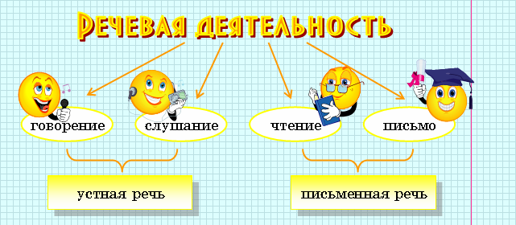

Развитие устной и письменной речи
Мы говорим речевая деятельность и имеем в виду 4 стороны этого процесса: говорение, слушание, чтение и письмо, которые группируются попарно: устная речь и письменная речь:

Устная речь намного старше письменной. Письменные тексты мы можем прочитать
вслух, т.е. озвучить, и это будет озвученный вариант письменной речи.
Книжная речь может иметь и письменную форму (статьи, монографии, очерки), и устную (выступления перед публикой, телепередачи). Разговорная речь тоже может выражаться в устной и письменной форме (письма, записки).
Однако между устной и письменной речью имеются существенные различия.
Устная речь:
произносимая, звучащая, говоримая; живые интонации; жесты, мимика; меньший
объем фразы, спонтанность, повторы, перебивы, пропуски; импровизированность;
связь со слушателем, возможность обратной связи; одномоментность речи;
вид речи: диалог или монолог по форме, но диалог по существу; прямой контакт со слушателем.
|
 |
Письменная речь:
написанная, читаемая; знаки препинания; отсутствие жестов, мимики; полноструктурное предложение;
продуманное построение фразы; отсутствие слушателя, но возможность рассчитывать
на потенциального слушателя (адресат); возможность перечитать, вернуться к началу
текста;
вид речи: монолог, а диалог лишь как средство речевой характеристики;
опосредованный контакт со слушателем.
|
Логическая пауза и логическое ударение
Речь состоит из отдельных "отрезков", разделенных остановками голоса, паузами, оправданным смыслом. Усваивая
такие "отрезки", слушающие как бы воспринимают мысль по частям.
 |
Части высказывания, состоящие из слов, тесно связанных по смыслу, называются речевыми звеньями, а разделяющие их паузы – логическими паузами.
|
 |
Прочитайте без остановки предложение: Они снабжали его инструментами своих соседей.
Если не сделать паузу, будет непонятно,
кого и чьими инструментами снабжали. "Снабжали его", тогда пауза нужна после
слова его. Если паузу сделать перед словом его, то получится, что друзей снабжали его инструментами, т.е. мысль будет искажена.
|
В тексте, как правило, места логических пауз и их длительность подсказывается знаками препинания, хотя возможны случаи
их несовпадения.
При интонационной разметке письменного
текста пауза обозначается знаком │. Тире в предложении часто обозначается
таким знаком ││. Запятая
означает незавершенность мысли и соответствует более высокой логической паузе.
Коммуникативные качества речи
Культура речи – часть общей культуры человека.
Основные качества хорошей речи:
 |
Содержательность – речь должна быть
интересной и полезной для слушателя, своим содержанием речь связывается с
жизнью общества, учит добру и истине, в противном случае речь может
превратиться в пустословие.
|
|
Точность – это качество хорошей речи
связано с точным изображением предметов действительности, точность наблюдений
свойственна мастерам слова, слова нужно употреблять точном соответствии с их
значением. |
|
Логичность – такое смысловое
соединение и грамматическое размещение слов
и предложений, которое дает возможность строго последовательно понимать
говорящего.
|
|
Правильность (соблюдение норм) – для
устной речи, в первую очередь, важны нормы произношения и нормы словесного
ударения, то, что принято называть орфоэпическими нормами, подвижное и
разноместное русское ударение приводит иногда к ошибке, грамматическая
правильность речи связана с нормативным употреблением форм слов и предложений.
|
|
Ясность (простота, доступность) –
это такой подбор слов, такое использование смысловых и грамматических связей
между словами и предложениями, которыми достигается наибольшее понимание смыла
речи. |
|
Выразительность – такой подбор слов
и предложений, который помогает разбудить не только мысль, но и эмоциональную,
эстетическую область нашего сознания; выразительная речь действует на наши
чувства сильнее, чем обычная речь.
|
|
Уместность – такой подбор средств
языка (слов, предложений, интонаций и т.д.), который делает речь вполне
отвечающей целям и условиям общения; уместная речь хорошо "приспособлена" к
теме сообщения, его логическому м эмоциональному содержанию, составу слушателей
и т.д. |
|
Чистота – предполагает отсутствие в
ней слов и выражений, не являющихся литературными, совершенно не приемлемы в
литературе речи грубые слова, слова - "сорняки". |